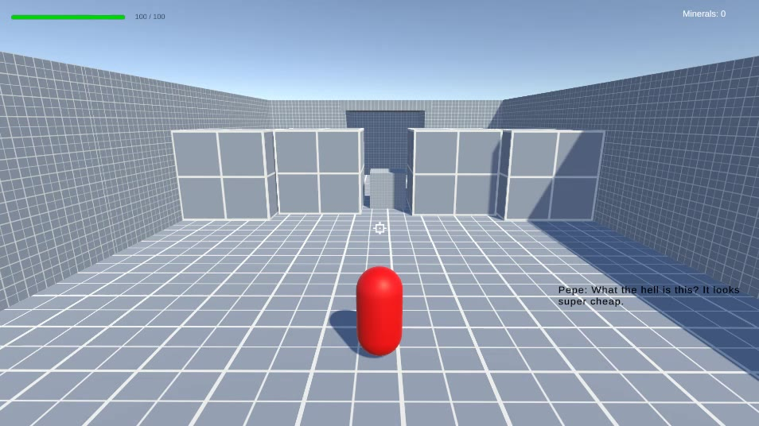
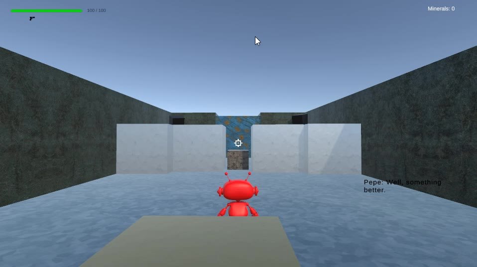
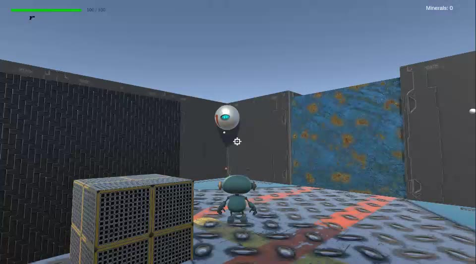
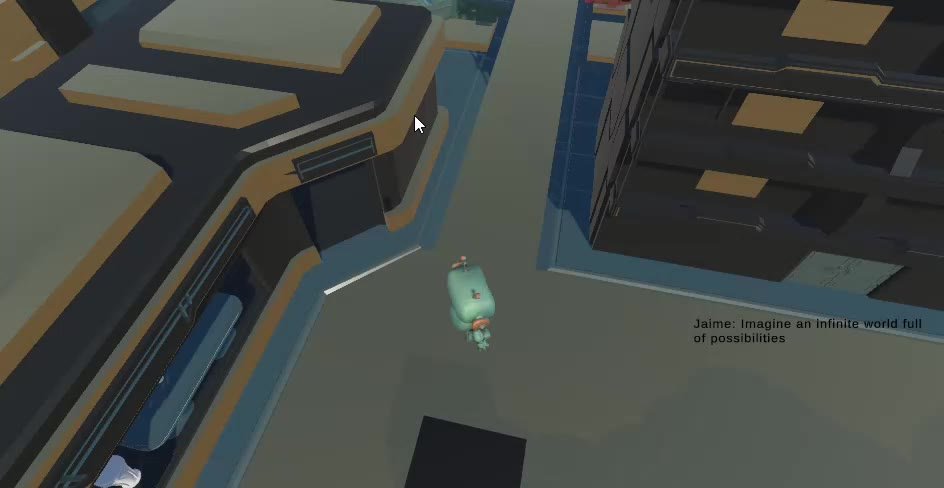

Beta2Beta.
El proceso de crear un juego, convertido en juego.
Dos amigos, una idea y distintas versiones de un mismo nivel. Un experimento en tercera persona donde las mejoras de mecánicas y presentación hacen avanzar tanto el juego como la conversación.
Mejorar sin cambiar el punto de partida
Quería probar una idea: que el jugador pudiera vivir las iteraciones de un proyecto desde dentro. En lugar de construir niveles independientes, reutilicé una misma base y la hice evolucionar en mecánicas y aspecto visual.
La historia sigue a dos amigos. Uno descubre cómo hacer juegos y enseña sus versiones al otro. Cada nueva presentación tiene un motivo dentro de la conversación: el desarrollo del juego se convierte en el hilo que une la experiencia.
Lo desarrollé en solitario durante un mes como experimento universitario.
Conservar la referencia para apreciar el cambio
El mismo espacio de base permite reconocer lo que cambia entre versiones: la representación del personaje, los materiales y la forma de presentar la acción.
Primero, el recorrido
Una cápsula y geometría gris dejan a la vista la estructura del nivel. El recorrido y las plataformas se presentan antes que el acabado visual.

Dar identidad a la base
El robot y los materiales sustituyen parte de la abstracción inicial. La referencia espacial se mantiene mientras el escenario empieza a adquirir una identidad propia.

La acción gana presencia
El personaje, los paneles del escenario y los enemigos presentan un acabado más definido. Los fragmentos de combate muestran otra capa de la evolución del prototipo.

El cierre abre una nueva posibilidad
La conversación lleva a imaginar un mundo mayor. El último vídeo funciona como desenlace narrativo y termina explicando que se trata de una prueba realizada en un mes.

Reglas para moverse, combatir y avanzar
Movimiento y recursos
El controlador combina movimiento relativo a cámara, salto, carrera y dash. Las armas separan un disparo de munición infinita de otro limitado: permiten sostener la acción y reservar un recurso para usos concretos.
Amenazas con respuestas distintas
Un enemigo persigue al jugador y explota; otro dispara hacia su posición. Acercarse y mantener la distancia plantean problemas diferentes dentro del mismo espacio.
Condiciones de progreso
Los sistemas incluyen puertas que se abren al eliminar enemigos y paredes que se destruyen con proyectiles especiales. La progresión puede depender tanto del combate como del uso de una herramienta.
La conversación marca el ritmo
Los diálogos de introducción pausan la acción; otros se activan mediante zonas y reducen la velocidad del tiempo. La conversación recibe espacio dentro del ritmo de la partida.
Una idea acotada para poder terminarla
Reutilizar la base permitió concentrar el mes de desarrollo en mostrar cambios reconocibles y conectar las versiones mediante una historia breve. El resultado es un experimento sobre el propio proceso de hacer juegos.
El siguiente paso sería comprobar si los jugadores reconocen el nivel entre versiones y entienden qué aporta cada cambio. Observar esa lectura ayudaría a ajustar los diálogos, el ritmo y el contraste entre iteraciones.
Proyecto individual
- Cristian Rodríguez Díaz
- Diseño y programación del experimento. Desarrollo en solitario durante un mes.
- Contexto
- Proyecto universitario realizado en Unity con C#.